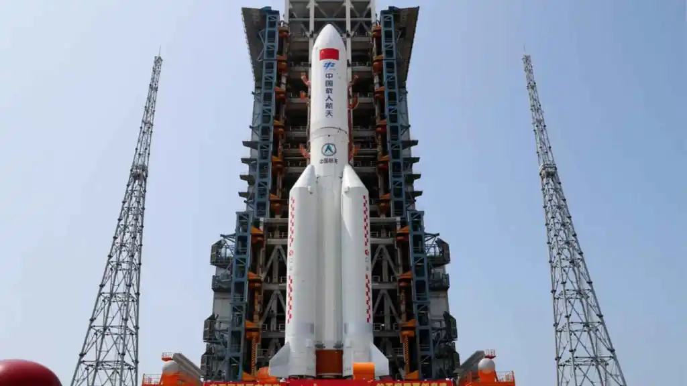
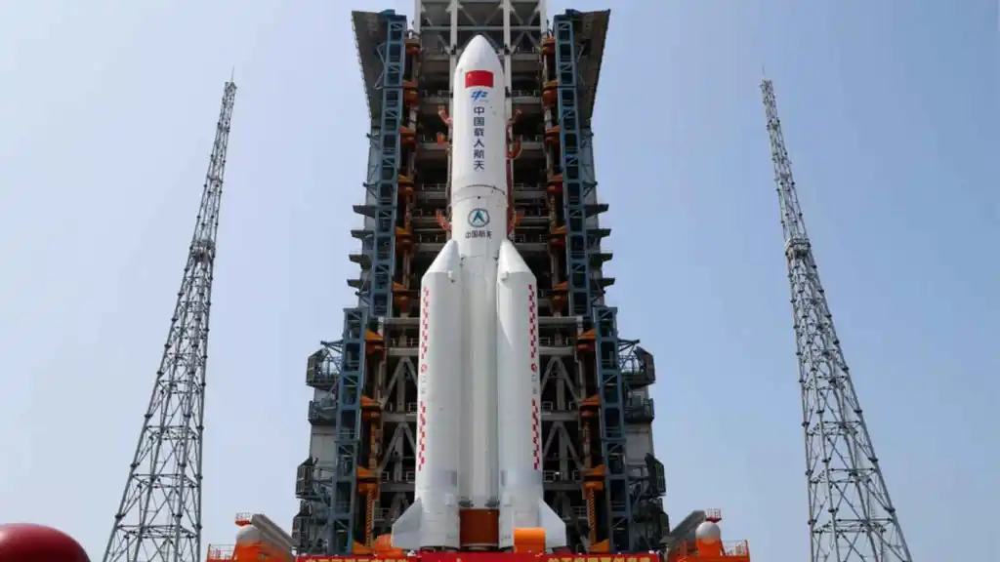

>Durant dècades després de la Guerra Freda, l’interès per l’exploració espacial va minvar considerablement. La cursa espacial que havia definit la rivalitat entre els Estats Units i la Unió Soviètica va deixar pas a una col·laboració més moderada, com l’Estació Espacial Internacional (ISS), un projecte únic que va simbolitzar la unió internacional per la ciència i l’exploració.
No obstant això, la situació va començar a canviar quan la Xina, vetada de participar en la ISS, va decidir construir la seva pròpia estació espacial, Tiangong, amb el suport de Rússia. Aquesta fita va consagrar la Xina com una de les potències espacials més influents. Les ambicions de la Xina, com enviar persones a la Lluna i, a llarg termini, a Mart, van activar les alarmes als Estats Units, que van respondre amb el Projecte Artemis, dissenyat per portar humans de nou a la Lluna abans que la Xina.
A més, l’entrada d’empreses privades al sector ha revolucionat la manera com es percep l’espai. Empreses com SpaceX han catalitzat el progrés tecnològic i han democratitzat l’espai amb missions comercials més accessibles i eficients.
La nova carrera espacial
Com es que de cop totel les nacions han recobrat l'interés per augmentar la seva presencia a l'espai?
En aquesta pàgina s’explicarà l’origen d’aquesta nova carrera espacial, els principals actors implicats i quin és l’objectiu final.
Perquè tornar a l'espai?
 

Els nous competidors
En aquesta nova era espacial, hi trobem dos tipus d’actors principals: les agències governamentals i les empreses privades.
Agències governamentals
- Clàssiques: NASA (EUA), Roscosmos (Rússia) i ESA (Europa).
Empreses privades
- SpaceX: Líder absoluta del sector privat amb tecnologia reutilitzable, Starship i Starlink.
- Blue Origin: Competeix amb SpaceX en turisme i transport espacial.
- Rocket Lab: Especialitzada en missions de menor escala i llançaments eficients.
- PLD Space: Promet ser l’empresa líder a Europa amb coets com Miura.


Quin és el nou objectiu?
Els objectius de la nova carrera espacial es poden dividir entre governs i empreses privades:
Objectius governamentals
Els governs busquen mantenir l’equilibri geopolític a l’espai, evitant que una sola nació assoleixi la sobirania total. Això explica per què els Estats Units segueixen de prop els moviments de la Xina, mentre que altres països reforcen col·laboracions per mantenir una presència equilibrada en aquest nou escenari.
Objectius empresarials
Les empreses privades busquen la monetització de l’espai, amb objectius com:
- Starlink: Una constel·lació de satèl·lits que dona cobertura d’Internet global.(SpaceX)
- Turisme espacial: Viatges suborbitals per civils (Blue Origin).
- Estacions espacials privades: Hotels o laboratoris comercials.
- Mineria d’asteroides: Una proposta llunyana però prometedora per extreure recursos rars.